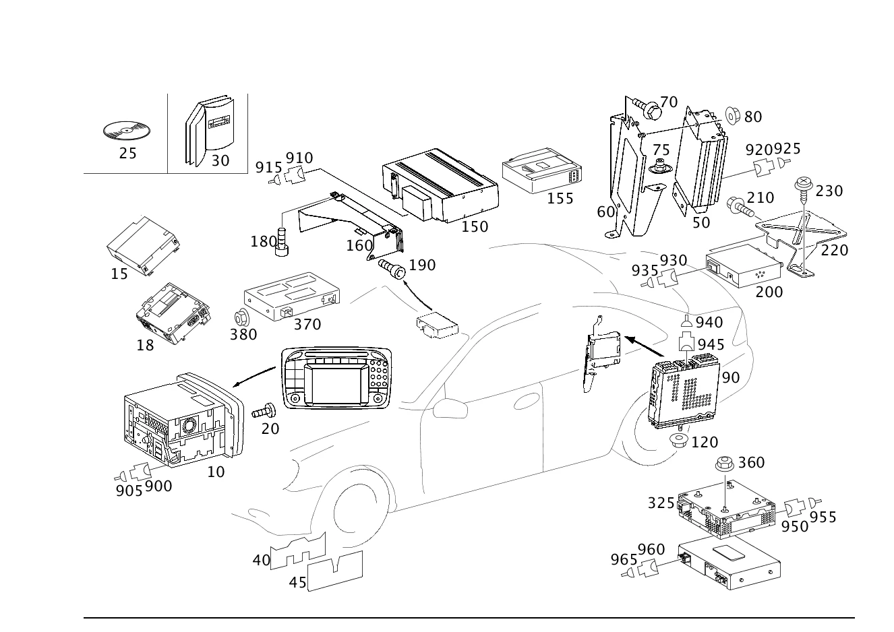

| № | Артикул | Название | Кол. | Примечание | Ограничение |
|---|---|---|---|---|---|
| 10 | A 203 820 16 86 | Радиоприемник | 1 | AUDIO 10 CC ECE [697] ДЕТАЛЬ ПОСТАВЛЯЕТСЯ ТОЛЬКО/ИЛИ ТАКЖЕ КАК ЗАП.ЧАСТЬ | -(352/353) |
| 10 | A 203 820 17 86 | Радиоприемник | 1 | AUDIO 10 CD ECE [697] ДЕТАЛЬ ПОСТАВЛЯЕТСЯ ТОЛЬКО/ИЛИ ТАКЖЕ КАК ЗАП.ЧАСТЬ | 756 |
| 10 | A 203 820 22 86 | Радиоприемник | 1 | AUDIO 10 CD ECE [697] ДЕТАЛЬ ПОСТАВЛЯЕТСЯ ТОЛЬКО/ИЛИ ТАКЖЕ КАК ЗАП.ЧАСТЬ | 756 |
| 10 | A 203 820 18 86 | Радиоприемник (RADIO) | 1 | AUDIO 10 CC ECE [697] ДЕТАЛЬ ПОСТАВЛЯЕТСЯ ТОЛЬКО/ИЛИ ТАКЖЕ КАК ЗАП.ЧАСТЬ | 754 |
| 10 | A 203 820 34 85 | Устройство управления | 1 | AUDIO 30 APS [697] ДЕТАЛЬ ПОСТАВЛЯЕТСЯ ТОЛЬКО/ИЛИ ТАКЖЕ КАК ЗАП.ЧАСТЬ | 353 |
| 10 | A 203 820 46 85 | Устройство управления | 1 | AUDIO 30 APS [697] ДЕТАЛЬ ПОСТАВЛЯЕТСЯ ТОЛЬКО/ИЛИ ТАКЖЕ КАК ЗАП.ЧАСТЬ | 353 |
| 10 | A 203 820 19 86 | Радиоприемник (RADIO) | 1 | AUDIO 30 EXPORT [697] ДЕТАЛЬ ПОСТАВЛЯЕТСЯ ТОЛЬКО/ИЛИ ТАКЖЕ КАК ЗАП.ЧАСТЬ | 752 |
| 10 | A 203 820 20 86 | ПАНЕЛЬ УПРАВЛ. | 1 | AUDIO 30 CC USA | 254 |
| 10 | A 203 820 24 86 | Радиоприемник (RADIO) | 1 | AUDIO 30 CC USA [402] БОЛЬШЕ НЕ ПОСТАВЛЯЕТСЯ | 254 |
| 10 | A 203 820 25 86 | Радиоприемник (RADIO) | 1 | AUDIO 30 CC USA | 254+804 |
| 10 | A 203 820 25 86 | Радиоприемник (RADIO) | 1 | AUDIO 30 CC USA | 254 |
| 10 | A 209 820 26 89 | Устройство управления | 1 | AUDIO 20 ECE [697] ДЕТАЛЬ ПОСТАВЛЯЕТСЯ ТОЛЬКО/ИЛИ ТАКЖЕ КАК ЗАП.ЧАСТЬ | 805 |
| 10 | A 209 820 26 89 | Устройство управления | 1 | AUDIO 20 ECE [697] ДЕТАЛЬ ПОСТАВЛЯЕТСЯ ТОЛЬКО/ИЛИ ТАКЖЕ КАК ЗАП.ЧАСТЬ | 523 |
| 10 | A 209 870 04 89 | Элемент управления | 1 | AUDIO 20 ECE [697] ДЕТАЛЬ ПОСТАВЛЯЕТСЯ ТОЛЬКО/ИЛИ ТАКЖЕ КАК ЗАП.ЧАСТЬ | 523 |
| 10 | A 209 870 02 89 | Элемент управления | 1 | AUDIO 20 ECE [697] ДЕТАЛЬ ПОСТАВЛЯЕТСЯ ТОЛЬКО/ИЛИ ТАКЖЕ КАК ЗАП.ЧАСТЬ | 523 |
| 10 | A 209 870 09 89 | Устройство управления | 1 | AUDIO 20 ECE [697] ДЕТАЛЬ ПОСТАВЛЯЕТСЯ ТОЛЬКО/ИЛИ ТАКЖЕ КАК ЗАП.ЧАСТЬ | 523 |
| 10 | A 209 820 65 89 | Устройство управления | 1 | AUDIO 20 ECE [697] ДЕТАЛЬ ПОСТАВЛЯЕТСЯ ТОЛЬКО/ИЛИ ТАКЖЕ КАК ЗАП.ЧАСТЬ | 523 |
| 10 | A 209 820 29 89 | Устройство управления | 1 | AUDIO 50 APS ECE [697] ДЕТАЛЬ ПОСТАВЛЯЕТСЯ ТОЛЬКО/ИЛИ ТАКЖЕ КАК ЗАП.ЧАСТЬ | 525+805 |
| 10 | A 209 820 37 89 | Элемент управления | 1 | АУДИОСИСТЕМА AUDIO 50 APS [697] ДЕТАЛЬ ПОСТАВЛЯЕТСЯ ТОЛЬКО/ИЛИ ТАКЖЕ КАК ЗАП.ЧАСТЬ | 525 |
| 10 | A 209 820 44 89 | Элемент управления | 1 | АУДИОСИСТЕМА AUDIO 50 APS [697] ДЕТАЛЬ ПОСТАВЛЯЕТСЯ ТОЛЬКО/ИЛИ ТАКЖЕ КАК ЗАП.ЧАСТЬ | 525 |
| 10 | A 209 820 53 89 | Элемент управления | 1 | АУДИОСИСТЕМА AUDIO 50 APS [697] ДЕТАЛЬ ПОСТАВЛЯЕТСЯ ТОЛЬКО/ИЛИ ТАКЖЕ КАК ЗАП.ЧАСТЬ | 525 |
| 10 | A 209 820 67 89 | Устройство управления | 1 | АУДИОСИСТЕМА AUDIO 50 APS [697] ДЕТАЛЬ ПОСТАВЛЯЕТСЯ ТОЛЬКО/ИЛИ ТАКЖЕ КАК ЗАП.ЧАСТЬ | 525 |
| 10 | A 209 870 19 89 | Устройство управления | 1 | АУДИОСИСТЕМА AUDIO 50 APS; HU [697] ДЕТАЛЬ ПОСТАВЛЯЕТСЯ ТОЛЬКО/ИЛИ ТАКЖЕ КАК ЗАП.ЧАСТЬ | 525 |
| 10 | A 209 870 22 89 | Устройство управления | 1 | АУДИОСИСТЕМА AUDIO 50 APS [697] ДЕТАЛЬ ПОСТАВЛЯЕТСЯ ТОЛЬКО/ИЛИ ТАКЖЕ КАК ЗАП.ЧАСТЬ | 525 |
| 10 | A 209 870 23 89 | Элемент управления | 1 | АУДИОСИСТЕМА AUDIO 50 APS [525] ОБРАТНАЯ СВЯЗЬ ОБЯЗАТЕЛЬНО ЧЕРЕЗ СИСТЕМУ РАСЧЕТОВ SYREK В ФРГ ДЕТАЛЬ ЗАКАЗЫВАТЬ КАК ВОССТАНОВЛЕННУЮ ДЕТАЛЬ [697] ДЕТАЛЬ ПОСТАВЛЯЕТСЯ ТОЛЬКО/ИЛИ ТАКЖЕ КАК ЗАП.ЧАСТЬ | 525 |
| 10 | A 209 870 24 89 | Устройство управления | 1 | АУДИОСИСТЕМА AUDIO 50 APS [525] ОБРАТНАЯ СВЯЗЬ ОБЯЗАТЕЛЬНО ЧЕРЕЗ СИСТЕМУ РАСЧЕТОВ SYREK В ФРГ ДЕТАЛЬ ЗАКАЗЫВАТЬ КАК ВОССТАНОВЛЕННУЮ ДЕТАЛЬ [697] ДЕТАЛЬ ПОСТАВЛЯЕТСЯ ТОЛЬКО/ИЛИ ТАКЖЕ КАК ЗАП.ЧАСТЬ | 525 |
| 10 | A 209 870 25 89 | Устройство управления | 1 | АУДИОСИСТЕМА AUDIO 50 APS [525] ОБРАТНАЯ СВЯЗЬ ОБЯЗАТЕЛЬНО ЧЕРЕЗ СИСТЕМУ РАСЧЕТОВ SYREK В ФРГ ДЕТАЛЬ ЗАКАЗЫВАТЬ КАК ВОССТАНОВЛЕННУЮ ДЕТАЛЬ [697] ДЕТАЛЬ ПОСТАВЛЯЕТСЯ ТОЛЬКО/ИЛИ ТАКЖЕ КАК ЗАП.ЧАСТЬ | 525 |
| 10 | A 209 820 27 89 | ПАНЕЛЬ УПРАВЛ. | 1 | AUDIO 20 USA | 535 |
| 10 | A 209 870 05 89 | Элемент управления | 1 | 535 | |
| 10 | A 209 870 03 89 | Элемент управления | 1 | [697] ДЕТАЛЬ ПОСТАВЛЯЕТСЯ ТОЛЬКО/ИЛИ ТАКЖЕ КАК ЗАП.ЧАСТЬ | 535 |
| 10 | A 209 870 10 89 | Элемент управления | 1 | [697] ДЕТАЛЬ ПОСТАВЛЯЕТСЯ ТОЛЬКО/ИЛИ ТАКЖЕ КАК ЗАП.ЧАСТЬ | 535 |
| 10 | A 209 820 66 89 | Элемент управления | 1 | AUDIO 20 CD USA | 535 |
| 10 | A 209 870 21 89 | Устройство управления (OPERATING UNIT) | 1 | AUDIO 20 USA [402] БОЛЬШЕ НЕ ПОСТАВЛЯЕТСЯ | 535 |
| 10 | A 203 827 52 42 | Устройство управления | 1 | COMAND [697] ДЕТАЛЬ ПОСТАВЛЯЕТСЯ ТОЛЬКО/ИЛИ ТАКЖЕ КАК ЗАП.ЧАСТЬ | 352 |
| 10 | A 203 827 53 42 | ПАНЕЛЬ УПРАВЛ. | 1 | COMAND С ТЕЛЕФОНОМ | 352+(494/329) |
| 10 | A 203 827 48 42 | ПАНЕЛЬ УПРАВЛ. | 1 | COMAND С ТЕЛЕФОНОМ | 352+(494/329)+804 |
| 10 | A 203 827 48 42 | ПАНЕЛЬ УПРАВЛ. | 1 | COMAND С ТЕЛЕФОНОМ | 352+(494/329) |
| 10 | A 203 827 23 42 | ПАНЕЛЬ УПРАВЛ. | 1 | COMAND [697] ДЕТАЛЬ ПОСТАВЛЯЕТСЯ ТОЛЬКО/ИЛИ ТАКЖЕ КАК ЗАП.ЧАСТЬ | 352+498 |
| 10 | A 203 827 54 42 | ПАНЕЛЬ УПРАВЛ. | 1 | COMAND | 352+498 |
| 10 | A 209 820 32 89 | ПАНЕЛЬ УПРАВЛ. | 1 | COMAND ЯПОНИЯ; COMAND JAPAN | 529 |
| 10 | A 209 870 08 89 | Элемент управления | 1 | COMAND ЯПОНИЯ | 529 |
| 10 | A 209 820 68 89 | Элемент управления | 1 | COMAND ЯПОНИЯ | 529 |
| 10 | A 209 820 81 89 | Элемент управления | 1 | COMAND ЯПОНИЯ | 529 |
| 10 | A 209 820 77 89 | Элемент управления | 1 | COMAND ЯПОНИЯ | 529 |
| 10 | A 209 820 30 89 | Устройство управления | 1 | COMAND APS С НАВИГАЦИЕЙ; COMAND M. NAVI ECE [697] ДЕТАЛЬ ПОСТАВЛЯЕТСЯ ТОЛЬКО/ИЛИ ТАКЖЕ КАК ЗАП.ЧАСТЬ | 527+805 |
| 10 | A 209 820 38 89 | Элемент управления | 1 | COMAND APS С НАВИГАЦИЕЙ [697] ДЕТАЛЬ ПОСТАВЛЯЕТСЯ ТОЛЬКО/ИЛИ ТАКЖЕ КАК ЗАП.ЧАСТЬ | 527 |
| 10 | A 209 820 45 89 | Элемент управления | 1 | COMAND APS С НАВИГАЦИЕЙ [697] ДЕТАЛЬ ПОСТАВЛЯЕТСЯ ТОЛЬКО/ИЛИ ТАКЖЕ КАК ЗАП.ЧАСТЬ | 527 |
| 10 | A 209 820 54 89 | Элемент управления | 1 | COMAND APS С НАВИГАЦИЕЙ [697] ДЕТАЛЬ ПОСТАВЛЯЕТСЯ ТОЛЬКО/ИЛИ ТАКЖЕ КАК ЗАП.ЧАСТЬ | 527 |
| 10 | A 209 820 64 89 | Элемент управления | 1 | COMAND ECE [697] ДЕТАЛЬ ПОСТАВЛЯЕТСЯ ТОЛЬКО/ИЛИ ТАКЖЕ КАК ЗАП.ЧАСТЬ | 527 |
| 10 | A 209 820 72 89 | Элемент управления | 1 | COMAND ECE [697] ДЕТАЛЬ ПОСТАВЛЯЕТСЯ ТОЛЬКО/ИЛИ ТАКЖЕ КАК ЗАП.ЧАСТЬ | 527 |
| 10 | A 209 820 71 89 | Устройство управления | 1 | COMAND ECE [697] ДЕТАЛЬ ПОСТАВЛЯЕТСЯ ТОЛЬКО/ИЛИ ТАКЖЕ КАК ЗАП.ЧАСТЬ | 527 |
| 10 | A 209 820 74 89 | Устройство управления | 1 | COMAND ECE [697] ДЕТАЛЬ ПОСТАВЛЯЕТСЯ ТОЛЬКО/ИЛИ ТАКЖЕ КАК ЗАП.ЧАСТЬ | 527 |
| 10 | A 209 820 76 89 | Устройство управления | 1 | COMAND ECE [697] ДЕТАЛЬ ПОСТАВЛЯЕТСЯ ТОЛЬКО/ИЛИ ТАКЖЕ КАК ЗАП.ЧАСТЬ | 527 |
| 10 | A 209 820 80 89 | Элемент управления | 1 | [525] ОБРАТНАЯ СВЯЗЬ ОБЯЗАТЕЛЬНО ЧЕРЕЗ СИСТЕМУ РАСЧЕТОВ SYREK В ФРГ ДЕТАЛЬ ЗАКАЗЫВАТЬ КАК ВОССТАНОВЛЕННУЮ ДЕТАЛЬ [697] ДЕТАЛЬ ПОСТАВЛЯЕТСЯ ТОЛЬКО/ИЛИ ТАКЖЕ КАК ЗАП.ЧАСТЬ | 527 |
| 10 | A 209 820 83 89 | Устройство управления | 1 | [525] ОБРАТНАЯ СВЯЗЬ ОБЯЗАТЕЛЬНО ЧЕРЕЗ СИСТЕМУ РАСЧЕТОВ SYREK В ФРГ ДЕТАЛЬ ЗАКАЗЫВАТЬ КАК ВОССТАНОВЛЕННУЮ ДЕТАЛЬ [697] ДЕТАЛЬ ПОСТАВЛЯЕТСЯ ТОЛЬКО/ИЛИ ТАКЖЕ КАК ЗАП.ЧАСТЬ | 527 |
| 10 | A 209 870 28 89 | Устройство управления (OPERATING UNIT) | 1 | [525] ОБРАТНАЯ СВЯЗЬ ОБЯЗАТЕЛЬНО ЧЕРЕЗ СИСТЕМУ РАСЧЕТОВ SYREK В ФРГ ДЕТАЛЬ ЗАКАЗЫВАТЬ КАК ВОССТАНОВЛЕННУЮ ДЕТАЛЬ [697] ДЕТАЛЬ ПОСТАВЛЯЕТСЯ ТОЛЬКО/ИЛИ ТАКЖЕ КАК ЗАП.ЧАСТЬ | 527 |
| 10 | A 209 820 75 89 | Устройство управления | 1 | COMAND ECE [697] ДЕТАЛЬ ПОСТАВЛЯЕТСЯ ТОЛЬКО/ИЛИ ТАКЖЕ КАК ЗАП.ЧАСТЬ | 527+863 |
| 10 | A 209 820 79 89 | Элемент управления | 1 | [525] ОБРАТНАЯ СВЯЗЬ ОБЯЗАТЕЛЬНО ЧЕРЕЗ СИСТЕМУ РАСЧЕТОВ SYREK В ФРГ ДЕТАЛЬ ЗАКАЗЫВАТЬ КАК ВОССТАНОВЛЕННУЮ ДЕТАЛЬ [697] ДЕТАЛЬ ПОСТАВЛЯЕТСЯ ТОЛЬКО/ИЛИ ТАКЖЕ КАК ЗАП.ЧАСТЬ | 527+863 |
| 10 | A 209 820 82 89 | Устройство управления | 1 | [525] ОБРАТНАЯ СВЯЗЬ ОБЯЗАТЕЛЬНО ЧЕРЕЗ СИСТЕМУ РАСЧЕТОВ SYREK В ФРГ ДЕТАЛЬ ЗАКАЗЫВАТЬ КАК ВОССТАНОВЛЕННУЮ ДЕТАЛЬ [697] ДЕТАЛЬ ПОСТАВЛЯЕТСЯ ТОЛЬКО/ИЛИ ТАКЖЕ КАК ЗАП.ЧАСТЬ | 527+863 |
| 10 | A 209 870 27 89 | Устройство управления (OPERATING UNIT) | 1 | [525] ОБРАТНАЯ СВЯЗЬ ОБЯЗАТЕЛЬНО ЧЕРЕЗ СИСТЕМУ РАСЧЕТОВ SYREK В ФРГ ДЕТАЛЬ ЗАКАЗЫВАТЬ КАК ВОССТАНОВЛЕННУЮ ДЕТАЛЬ [697] ДЕТАЛЬ ПОСТАВЛЯЕТСЯ ТОЛЬКО/ИЛИ ТАКЖЕ КАК ЗАП.ЧАСТЬ | 527+863 |
| 10 | A 209 820 31 89 | ПАНЕЛЬ УПРАВЛ. | 1 | COMAND DVD APS США С НАВИГАЦИЕЙ | 530 |
| 10 | A 209 870 01 89 | Элемент управления | 1 | COMAND DVD APS США С НАВИГАЦИЕЙ | 530 |
| 10 | A 209 870 07 89 | ОРГАН УПРАВЛ. | 1 | COMAND DVD APS США С НАВИГАЦИЕЙ | 530 |
| 10 | A 209 820 39 89 | Элемент управления | 1 | COMAND DVD APS США С НАВИГАЦИЕЙ | 530 |
| 10 | A 209 820 69 89 | Элемент управления | 1 | COMAND DVD APS США С НАВИГАЦИЕЙ; HU | 530 |
| 10 | A 209 870 20 89 | Элемент управления | 1 | COMAND DVD APS США С НАВИГАЦИЕЙ | 530 |
| 10 | A 209 820 78 89 | Устройство управления (OPERATING UNIT) | 1 | COMAND DVD APS США С НАВИГАЦИЕЙ [402] БОЛЬШЕ НЕ ПОСТАВЛЯЕТСЯ | 530 |
| 15 | A 211 827 28 62 | - CD-ROM-дисковод (CD-ROM DRIVE) | 1 | [402] БОЛЬШЕ НЕ ПОСТАВЛЯЕТСЯ [T403] CD PLAYER A 211 827 28 62 SUITABLE FOR FOLLOWING OPERATING UNITS A 164 820 15 79; A 164 820 25 79; A 164 870 34 89; A 169 820 73 89; A 169 820 96 89; A 169 870 09 89; A 171 820 41 89; A 171 820 35 89; A 171 820 67 89; --------------------------------------------------------------- A 203 870 48 89; A 203 870 61 89; A 203 870 75 89; --------------------------------------------------------------- A 209 820 67 89; A 209 870 19 89; A 209 870 22 89; A 211 870 29 89; A 211 870 27 90; A 211 870 44 90; --------------------------------------------------------------- A 251 820 15 79; A 251 820 25 79; A 251 870 40 89; --------------------------------------------------------------- A 906 820 14 89; =============================================================== CD PLAYER A 211 827 29 62 SUITABLE FOR FOLLOWING OPERATING UNITS A 164 820 01 79; A 164 820 08 79; A 169 820 14 89; A 169 820 40 89; A 169 820 44 89; A 169 820 50 89; A 171 820 31 89; A 171 820 32 89; A 171 820 40 89; --------------------------------------------------------------- A 203 827 41 42; A 203 870 09 89; A 203 870 19 89; A 203 870 34 89; --------------------------------------------------------------- A 209 820 29 89; A 209 820 37 89; A 209 820 44 89; A 209 820 53 89; A 211 827 51 42; A 211 820 20 97; A 211 870 36 89; A 211 870 45 89; --------------------------------------------------------------- A 251 820 01 79; A 251 820 10 79; --------------------------------------------------------------- A 454 820 14 79 --------------------------------------------------------------- =============================================================== | 525 |
| 15 | A 211 827 29 62 | - CD-ROM-дисковод (CD-ROM DRIVE) | 1 | [417] БОЛЬШЕ НЕ ПОСТАВЛЯЕТСЯ, ЗАКАЗЫВАТЬ КОМПЛЕКТ ПОСТАВКИ [T403] CD PLAYER A 211 827 28 62 SUITABLE FOR FOLLOWING OPERATING UNITS A 164 820 15 79; A 164 820 25 79; A 164 870 34 89; A 169 820 73 89; A 169 820 96 89; A 169 870 09 89; A 171 820 41 89; A 171 820 35 89; A 171 820 67 89; --------------------------------------------------------------- A 203 870 48 89; A 203 870 61 89; A 203 870 75 89; --------------------------------------------------------------- A 209 820 67 89; A 209 870 19 89; A 209 870 22 89; A 211 870 29 89; A 211 870 27 90; A 211 870 44 90; --------------------------------------------------------------- A 251 820 15 79; A 251 820 25 79; A 251 870 40 89; --------------------------------------------------------------- A 906 820 14 89; =============================================================== CD PLAYER A 211 827 29 62 SUITABLE FOR FOLLOWING OPERATING UNITS A 164 820 01 79; A 164 820 08 79; A 169 820 14 89; A 169 820 40 89; A 169 820 44 89; A 169 820 50 89; A 171 820 31 89; A 171 820 32 89; A 171 820 40 89; --------------------------------------------------------------- A 203 827 41 42; A 203 870 09 89; A 203 870 19 89; A 203 870 34 89; --------------------------------------------------------------- A 209 820 29 89; A 209 820 37 89; A 209 820 44 89; A 209 820 53 89; A 211 827 51 42; A 211 820 20 97; A 211 870 36 89; A 211 870 45 89; --------------------------------------------------------------- A 251 820 01 79; A 251 820 10 79; --------------------------------------------------------------- A 454 820 14 79 --------------------------------------------------------------- =============================================================== | 525 |
| 18 | A 164 820 06 85 | - ЭБУ навигационной системы | 1 | НАВИГАЦИОННЫЙ КОМПЬЮТЕР [672] ДЕТАЛЬ ПОСЛЕ УСТАН.ПРОВЕРИТЬ НА АКТУАЛЬНОСТЬ "ПРОШИВНОГО" ПО [697] ДЕТАЛЬ ПОСТАВЛЯЕТСЯ ТОЛЬКО/ИЛИ ТАКЖЕ КАК ЗАП.ЧАСТЬ | 530 |
| 18 | A 164 820 52 85 | - ЭБУ навигационной системы | 1 | НАВИГАЦИОННЫЙ КОМПЬЮТЕР [697] ДЕТАЛЬ ПОСТАВЛЯЕТСЯ ТОЛЬКО/ИЛИ ТАКЖЕ КАК ЗАП.ЧАСТЬ | 530 |
| 18 | A 164 820 58 85 | - ЭБУ навигационной системы | 1 | НАВИГАЦИОННЫЙ КОМПЬЮТЕР | 530 |
| 20 | N 000000 003242 | Винт с плоск.гол. (PAN HEAD SCREW) | 2 | КРЕПЛЕНИЕ МАГНИТОЛЫ; 5X20 | 752/754/756/254 |
| 20 | N 000000 003242 | Винт с плоск.гол. (PAN HEAD SCREW) | 4 | КРЕПЛЕНИЕ МАГНИТОЛЫ; 5X20 | |
| 20 | N 000000 003242 | Винт с плоск.гол. (PAN HEAD SCREW) | 4 | COMAND; 5X20 | 352/353 |
| 25 | A 169 827 25 59 | CD-ROM | 1 | НАВИГАЦИЯ | 525 |
| 25 | A 169 827 34 59 | CD-ROM | 1 | НАВИГАЦИЯ | 525 |
| 25 | A 169 827 46 59 | CD-ROM | 1 | НАВИГАЦИЯ | 525 |
| 25 | A 169 827 49 59 | CD-ROM | 1 | НАВИГАЦИЯ | 525 |
| 25 | A 169 827 52 59 | CD-ROM | 1 | НАВИГАЦИЯ | 525 |
| 25 | A 169 827 59 59 | CD-ROM | 1 | НАВИГАЦИЯ | 525 |
| 25 | A 169 827 63 59 | CD-ROM | 1 | НАВИГАЦИЯ | 525 |
| 25 | A 169 827 66 59 | CD-ROM | 1 | НАВИГАЦИЯ | 511/525 |
| 25 | A 169 827 82 59 | DVD-ROM | 1 | НАВИГАЦИЯ | 511/525 |
| 25 | A 169 827 84 59 | CD-ROM | 1 | НАВИГАЦИЯ | 511/525 |
| 25 | A 169 827 26 59 | DVD-диск | 1 | НАВИГАЦИЯ | 527 |
| 25 | A 169 827 33 59 | DVD-диск | 1 | НАВИГАЦИЯ | 527 |
| 25 | A 169 827 36 59 | DVD-диск | 1 | НАВИГАЦИЯ; ECE | 527 |
| 25 | A 169 827 45 59 | DVD-диск | 1 | НАВИГАЦИЯ | 527 |
| 25 | A 203 827 38 59 | DVD-диск | 1 | НАВИГАЦИЯ | 527 |
| 25 | A 169 827 51 59 | DVD-ROM | 1 | НАВИГАЦИЯ | 527 |
| 25 | A 169 827 50 59 | DVD-ROM | 1 | НАВИГАЦИЯ | 527 |
| 25 | A 169 827 56 59 | DVD-ROM | 1 | НАВИГАЦИЯ | 527 |
| 25 | A 169 827 58 59 | DVD-ROM | 1 | НАВИГАЦИЯ | 527 |
| 25 | A 169 827 65 59 | DVD-диск | 1 | НАВИГАЦИЯ | 527 |
| 25 | A 169 827 74 59 | DVD-ROM | 1 | НАВИГАЦИЯ | 527 |
| 25 | A 169 827 81 59 | DVD-ROM | 1 | НАВИГАЦИЯ | 527 |
| 25 | A 169 827 83 59 | DVD-ROM | 1 | НАВИГАЦИЯ | 527 |
| 25 | A 169 827 05 59 | DVD-диск | 1 | НАВИГАЦИЯ | 527+(672L/674L/675L) |
| 25 | A 169 827 18 59 | DVD-диск | 1 | НАВИГАЦИЯ | 527+(672L/674L/675L)/527+(672L/674L/675L)+807 |
| 25 | A 169 827 24 59 | DVD-диск | 1 | НАВИГАЦИЯ | 527+(672L/674L/675L) |
| 25 | A 169 827 24 59 | DVD-диск | 1 | НАВИГАЦИЯ | 527+(672L/674L/675L) |
| 25 | A 169 827 41 59 | DVD-диск | 1 | НАВИГАЦИЯ | 527+(672L/674L/675L) |
| 25 | A 169 827 43 59 | DVD-диск | 1 | НАВИГАЦИЯ | 527+(805L/807L/849L/861L/873L/878L/880L/675L/841L/843L/649L/647L) |
| 25 | A 169 827 54 59 | DVD-диск | 1 | НАВИГАЦИЯ | 527+(805L/807L/849L/861L/873L/878L/880L/675L/841L/843L/649L/647L) |
| 25 | A 169 827 57 59 | DVD-диск | 1 | НАВИГАЦИЯ | 527+(601L/623/647L/649L/672L/674L/675L/841L/843L) |
| 25 | A 169 827 70 59 | DVD-ROM | 1 | НАВИГАЦИЯ | 527+(601L/623/647L/649L/672L/674L/675L/841L/843L) |
| 25 | A 169 827 43 59 | DVD-диск | 1 | НАВИГАЦИЯ | 527+(672L/674L/675L) |
| 25 | A 169 827 54 59 | DVD-диск | 1 | НАВИГАЦИЯ | 527+(672L/674L/675L) |
| 25 | A 169 827 71 59 | DVD-диск (DVD-ROM) | 1 | НАВИГАЦИЯ [402] БОЛЬШЕ НЕ ПОСТАВЛЯЕТСЯ | 527+(601L/623/647L/649L/672L/674L/675L/841L/843L) |
| 25 | A 169 827 22 59 | DVD-диск | 1 | НАВИГАЦИЯ | 527+625 |
| 25 | A 169 827 40 59 | DVD-диск | 1 | НАВИГАЦИЯ | 527+625 |
| 25 | A 169 827 44 59 | DVD-диск | 1 | НАВИГАЦИЯ | 527+(625/919L) |
| 25 | A 169 827 55 59 | DVD-диск | 1 | НАВИГАЦИЯ | 527+(625/919L) |
| 25 | A 169 827 62 59 | DVD-диск | 1 | НАВИГАЦИЯ | 527+(625/919L) |
| 25 | A 169 827 72 59 | DVD-диск | 1 | НАВИГАЦИЯ | 527+(625/919L) |
| 25 | A 169 827 73 59 | DVD-диск (DVD-ROM) | 1 | НАВИГАЦИЯ [402] БОЛЬШЕ НЕ ПОСТАВЛЯЕТСЯ | 527+(625/919L) |
| 25 | A 169 827 29 59 | DVD-диск | 1 | НАВИГАЦИЯ | 527+(805L/807L/849L/861L/873L/878L/880L) |
| 25 | A 169 827 39 59 | DVD-диск | 1 | НАВИГАЦИЯ | 527+(805L/807L/849L/861L/873L/878L/880L) |
| 25 | A 169 827 27 59 | DVD-диск | 1 | НАВИГАЦИЯ [402] БОЛЬШЕ НЕ ПОСТАВЛЯЕТСЯ | 527+823L |
| 25 | A 169 827 37 59 | DVD-диск | 1 | НАВИГАЦИЯ | 527+823L |
| 25 | A 169 827 28 59 | DVD-диск | 1 | НАВИГАЦИЯ [402] БОЛЬШЕ НЕ ПОСТАВЛЯЕТСЯ | 527+(875L/855L/879L) |
| 25 | A 169 827 38 59 | DVD-диск | 1 | НАВИГАЦИЯ | 527+(875L/855L/879L) |
| 25 | A 169 827 42 59 | DVD-диск | 1 | НАВИГАЦИЯ | 527+(823L/875L/855L/879L) |
| 25 | A 169 827 53 59 | DVD-диск | 1 | НАВИГАЦИЯ | 527+(823L/875L/855L/879L) |
| 25 | A 169 827 61 59 | DVD-диск | 1 | НАВИГАЦИЯ | 527+(823L/875L/855L/879L) |
| 25 | A 169 827 68 59 | DVD-ROM | 1 | НАВИГАЦИЯ | 527+(823L/831L/875L/855L/879L/915L) |
| 25 | A 169 827 69 59 | DVD-диск | 1 | НАВИГАЦИЯ [402] БОЛЬШЕ НЕ ПОСТАВЛЯЕТСЯ | 527+(823L/831L/855L/875L/879L/915L) |
| 25 | A 169 827 35 59 | DVD-диск | 1 | НАВИГАЦИЯ | 530 |
| 25 | A 169 827 48 59 | DVD-диск | 1 | НАВИГАЦИЯ | 530 |
| 25 | A 169 827 60 59 | DVD-диск | 1 | НАВИГАЦИЯ | 530 |
| 25 | A 169 827 67 59 | DVD-диск | 1 | НАВИГАЦИЯ | 530 |
| 25 | A 169 827 85 59 | DVD-ROM | 1 | НАВИГАЦИЯ | 530 |
| 25 | A 169 827 86 59 | DVD-ROM | 1 | НАВИГАЦИЯ | 530 |
| 30 | A 209 584 41 81 | РУК-ВО ПО ЭКСПЛУАТ. | 1 | НЕМЕЦКИЙ; AUDIO 30 APS [402] БОЛЬШЕ НЕ ПОСТАВЛЯЕТСЯ | (202/202B)+353 |
| 30 | A 209 584 48 82 | Руководство | 1 | НЕМЕЦКИЙ; AUDIO 30 APS [402] БОЛЬШЕ НЕ ПОСТАВЛЯЕТСЯ | (202/202B)+353 |
| 30 | A 209 584 42 81 | Руководство (OPERATING INSTRUCTIONS) | 1 | АНГЛИЙСКИЙ ЯЗЫК AUDIO 30 APS [402] БОЛЬШЕ НЕ ПОСТАВЛЯЕТСЯ | (205/205B)+353 |
| 30 | A 209 584 49 82 | Руководство (OPERATING INSTRUCTIONS) | 1 | АНГЛИЙСКИЙ ЯЗЫК; AUDIO 30APS [402] БОЛЬШЕ НЕ ПОСТАВЛЯЕТСЯ | (205/205B)+353 |
| 30 | A 209 584 43 81 | Руководство (OPERATING INSTRUCTIONS) | 1 | ФРАНЦУЗСКИЙ ЯЗЫК; AUDIO 30APS [402] БОЛЬШЕ НЕ ПОСТАВЛЯЕТСЯ | (207/207B)+353 |
| 30 | A 209 584 50 82 | Руководство (OPERATING INSTRUCTIONS) | 1 | ФРАНЦУЗСКИЙ ЯЗЫК; AUDIO 30APS [402] БОЛЬШЕ НЕ ПОСТАВЛЯЕТСЯ | (207/207B)+353 |
| 30 | A 209 584 44 81 | РУК-ВО ПО ЭКСПЛУАТ. | 1 | ИСПАНСКИЙ; AUDIO 30APS | (208/208B)+353 |
| 30 | A 209 584 51 82 | Руководство (OPERATING INSTRUCTIONS) | 1 | ИСПАНСКИЙ; AUDIO 30APS [402] БОЛЬШЕ НЕ ПОСТАВЛЯЕТСЯ | (208/208B)+353 |
| 30 | A 209 584 45 81 | Руководство (OPERATING INSTRUCTIONS) | 1 | ПОРТУГАЛЬСКИЙ; AUDIO 30APS [402] БОЛЬШЕ НЕ ПОСТАВЛЯЕТСЯ | (209/209B)+353 |
| 30 | A 209 584 52 82 | Руководство (OPERATING INSTRUCTIONS) | 1 | ПОРТУГАЛЬСКИЙ; AUDIO 30APS [402] БОЛЬШЕ НЕ ПОСТАВЛЯЕТСЯ | (209/209B)+353 |
| 30 | A 209 584 53 82 | Руководство (OPERATING INSTRUCTIONS) | 1 | ИТАЛЬЯНСКИЙ ЯЗЫК; AUDIO 30APS [402] БОЛЬШЕ НЕ ПОСТАВЛЯЕТСЯ | (206/206B)+353 |
| 30 | A 209 584 46 81 | РУК-ВО ПО ЭКСПЛУАТ. | 1 | ИТАЛЬЯНСКИЙ ЯЗЫК; AUDIO 30APS | (206/206B)+353 |
| 30 | A 170 584 29 98 | Руководство (OPERATING INSTRUCTIONS) | 1 | СМЕННЫЙ БЛАНК / 10\-ЯЗЫЧ. 2\-ОЙ НАВИГАЦ. CD AUDIO 30 APS | 353 |
| 30 | A 209 584 47 81 | Руководство (OPERATING INSTRUCTIONS) | 1 | ГОЛЛАНДСКИЕ; AUDIO 30APS [402] БОЛЬШЕ НЕ ПОСТАВЛЯЕТСЯ | 201B+353 |
| 30 | A 209 584 54 82 | Руководство (OPERATING INSTRUCTIONS) | 1 | ГОЛЛАНДСКИЕ; AUDIO 30APS [402] БОЛЬШЕ НЕ ПОСТАВЛЯЕТСЯ | 201B+353 |
| 30 | A 209 584 48 81 | Руководство (OPERATING INSTRUCTIONS) | 1 | ДАТСКИЙ; AUDIO 30APS [402] БОЛЬШЕ НЕ ПОСТАВЛЯЕТСЯ | 200B+353 |
| 30 | A 209 584 55 82 | Руководство (OPERATING INSTRUCTIONS) | 1 | ДАТСКИЙ; AUDIO 30APS [402] БОЛЬШЕ НЕ ПОСТАВЛЯЕТСЯ | 200B+353 |
| 30 | A 209 584 49 81 | Руководство (OPERATING INSTRUCTIONS) | 1 | ШВЕДСКИЙ; AUDIO 30APS [402] БОЛЬШЕ НЕ ПОСТАВЛЯЕТСЯ | 210B+353 |
| 30 | A 209 584 56 82 | Руководство (OPERATING INSTRUCTIONS) | 1 | ШВЕДСКИЙ; AUDIO 30APS [402] БОЛЬШЕ НЕ ПОСТАВЛЯЕТСЯ | 210B+353 |
| 30 | A 209 584 50 81 | Руководство (OPERATING INSTRUCTIONS) | 1 | ФИНСКИЙ ЯЗЫК; AUDIO 30APS [402] БОЛЬШЕ НЕ ПОСТАВЛЯЕТСЯ | 204B+353 |
| 30 | A 209 584 57 82 | Руководство (OPERATING INSTRUCTIONS) | 1 | ФИНСКИЙ ЯЗЫК; AUDIO 30APS [402] БОЛЬШЕ НЕ ПОСТАВЛЯЕТСЯ | 204B+353 |
| 30 | A 203 584 23 96 | Руководство (OPERATOR'S MANUAL) | 1 | НЕМЕЦКИЙ; COMAND ECE | (202/202B)+352 |
| 30 | A 169 584 65 82 | Руководство (OPERATING INSTRUCTIONS) | 1 | НЕМЕЦКИЙ; COMAND ECE | (202/202B)+(526/527)+807 |
| 30 | A 203 584 24 96 | Руководство (OPERATOR'S MANUAL) | 1 | АНГЛИЙСКИЙ ЯЗЫК [402] БОЛЬШЕ НЕ ПОСТАВЛЯЕТСЯ | (205/205B)+352 |
| 30 | A 169 584 66 82 | Руководство (OPERATING INSTRUCTIONS) | 1 | АНГЛИЙСКИЙ ЯЗЫК; COMAND ECE | (205/205B)+(526/527)+807 |
| 30 | A 203 584 25 96 | Руководство | 1 | ФРАНЦУЗСКИЙ ЯЗЫК; COMAND ECE [402] БОЛЬШЕ НЕ ПОСТАВЛЯЕТСЯ | (207/207B)+352 |
| 30 | A 169 584 67 82 | Руководство (OPERATING INSTRUCTIONS) | 1 | ФРАНЦУЗСКИЙ ЯЗЫК; COMAND ECE | 207+(526/527)+807 |
| 30 | A 169 584 67 82 | Руководство (OPERATING INSTRUCTIONS) | 1 | ФРАНЦУЗСКИЙ ЯЗЫК; COMAND ECE | 207B+(526/527)+807 |
| 30 | A 203 584 26 96 | РУК-ВО ПО ЭКСПЛУАТ. | 1 | ИСПАНСКИЙ; COMAND ECE | (208/208B)+352 |
| 30 | A 169 584 68 82 | Руководство (OPERATING INSTRUCTIONS) | 1 | ИСПАНСКИЙ; COMAND ECE | (208/208B)+(526/527)+807 |
| 30 | A 203 584 27 96 | Руководство (OPERATOR'S MANUAL) | 1 | ПОРТУГАЛЬСКИЙ; COMAND ECE | (209/209B)+352 |
| 30 | A 169 584 69 82 | Руководство | 1 | ПОРТУГАЛЬСКИЙ; COMAND ECE | (209/209B)+(526/527)+807 |
| 30 | A 203 584 29 96 | Руководство (OPERATOR'S MANUAL) | 1 | ГОЛЛАНДСКИЕ; COMAND ECE | 201B+352 |
| 30 | A 169 584 71 82 | Руководство (OPERATING INSTRUCTIONS) | 1 | ГОЛЛАНДСКИЕ; COMAND ECE | 201B+(526/527)+807 |
| 30 | A 203 584 30 96 | Руководство (OPERATOR'S MANUAL) | 1 | ДАТСКИЙ; COMAND ECE | 200B+352 |
| 30 | A 169 584 72 82 | Руководство (OPERATING INSTRUCTIONS) | 1 | ДАТСКИЙ; COMAND ECE | 200B+(526/527)+807 |
| 30 | A 203 584 31 96 | Руководство (OPERATOR'S MANUAL) | 1 | ШВЕДСКИЙ; COMAND ECE | 210B+352 |
| 30 | A 169 584 73 82 | Руководство (OPERATING INSTRUCTIONS) | 1 | ШВЕДСКИЙ; COMAND ECE | 210B+(526/527)+807 |
| 30 | A 203 584 32 96 | Руководство (OPERATOR'S MANUAL) | 1 | ФИНСКИЙ ЯЗЫК; COMAND ECE [402] БОЛЬШЕ НЕ ПОСТАВЛЯЕТСЯ | 204B+352 |
| 30 | A 169 584 74 82 | Руководство (OPERATING INSTRUCTIONS) | 1 | ФИНСКИЙ ЯЗЫК; COMAND ECE | 204B+(526/527)+807 |
| 30 | A 203 584 34 96 | Руководство (OPERATOR'S MANUAL) | 1 | Русский [402] БОЛЬШЕ НЕ ПОСТАВЛЯЕТСЯ | 203B+352 |
| 30 | A 169 584 75 82 | Руководство (OPERATING INSTRUCTIONS) | 1 | Русский; COMAND ECE | 203B+(526/527)+807 |
| 30 | A 169 584 70 82 | Руководство (OPERATING INSTRUCTIONS) | 1 | ИТАЛЬЯНСКИЙ ЯЗЫК; COMAND ECE | (206/206B)+(526/527)+807 |
| 30 | A 203 584 28 96 | Руководство (OPERATOR'S MANUAL) | 1 | ИТАЛЬЯНСКИЙ ЯЗЫК; COMAND ECE [402] БОЛЬШЕ НЕ ПОСТАВЛЯЕТСЯ | (206/206B)+352 |
| 30 | A 203 584 57 96 | Руководство (OPERATOR'S MANUAL) | 1 | НЕМЕЦКИЙ; AUDIO 10CC/ 10CD | (202/202B)+-(352/353/752) |
| 30 | A 209 584 11 83 | Руководство (OPERATING INSTRUCTIONS) | 1 | НЕМЕЦКИЙ; AUDIO 20CD | (202/202B)+523/202/202B |
| 30 | A 209 584 11 96 | Руководство (OPERATING INSTRUCTIONS) | 1 | НЕМЕЦКИЙ; AUDIO 20CD | (202/202B)+523 |
| 30 | A 203 584 58 96 | Руководство (OPERATING INSTRUCTIONS) | 1 | АНГЛИЙСКИЙ ЯЗЫК; AUDIO 10CC/ 10CD | (205/205B)+-(352/353/752) |
| 30 | A 209 584 12 83 | Руководство | 1 | АНГЛИЙСКИЙ ЯЗЫК; AUDIO 20CD | 205/205B |
| 30 | A 209 584 12 96 | Руководство (OPERATING INSTRUCTIONS) | 1 | АНГЛИЙСКИЙ ЯЗЫК; AUDIO 20CD [402] БОЛЬШЕ НЕ ПОСТАВЛЯЕТСЯ | 203B/205/205B |
| 30 | A 203 584 59 96 | Руководство | 1 | ФРАНЦУЗСКИЙ ЯЗЫК; AUDIO 10CC/ 10CD | (207/207B)+-(352/353/752) |
| 30 | A 209 584 13 83 | Руководство (OPERATING INSTRUCTIONS) | 1 | ФРАНЦУЗСКИЙ ЯЗЫК; AUDIO 20CD | 207/207B |
| 30 | A 209 584 13 83 | Руководство (OPERATING INSTRUCTIONS) | 1 | ФРАНЦУЗСКИЙ ЯЗЫК; AUDIO 20CD | 207B+523 |
| 30 | A 209 584 13 96 | Руководство (OPERATING INSTRUCTIONS) | 1 | ФРАНЦУЗСКИЙ ЯЗЫК; AUDIO 20CD | 207/207B |
| 30 | A 203 584 60 96 | Руководство (OPERATOR'S MANUAL) | 1 | ИСПАНСКИЙ; AUDIO 10CC/ 10CD [402] БОЛЬШЕ НЕ ПОСТАВЛЯЕТСЯ | (208/208B)+-(352/353/752) |
| 30 | A 209 584 14 83 | Руководство (OPERATING INSTRUCTIONS) | 1 | ИСПАНСКИЙ; AUDIO 20CD | 208/208B |
| 30 | A 209 584 14 96 | Руководство | 1 | ИСПАНСКИЙ; AUDIO 20CD | 208/208B |
| 30 | A 203 584 61 96 | Руководство (OPERATOR'S MANUAL) | 1 | ПОРТУГАЛЬСКИЙ; AUDIO 10CC/ 10CD [402] БОЛЬШЕ НЕ ПОСТАВЛЯЕТСЯ | (209/209B)+-(352/353/752) |
| 30 | A 209 584 15 83 | Руководство (OPERATING INSTRUCTIONS) | 1 | ПОРТУГАЛЬСКИЙ; AUDIO 20CD | (209/209B)+523 |
| 30 | A 209 584 15 96 | Руководство (OPERATING INSTRUCTIONS) | 1 | ПОРТУГАЛЬСКИЙ; AUDIO 20CD | 209/209B |
| 30 | A 203 584 63 96 | Руководство (OPERATOR'S MANUAL) | 1 | ГОЛЛАНДСКИЕ; AUDIO 10CC/ 10CD [402] БОЛЬШЕ НЕ ПОСТАВЛЯЕТСЯ | 201B+-(352/353/752) |
| 30 | A 209 584 17 83 | Руководство (OPERATING INSTRUCTIONS) | 1 | ГОЛЛАНДСКИЕ; AUDIO 20CD | 201B |
| 30 | A 209 584 17 96 | Руководство (OPERATING INSTRUCTIONS) | 1 | ГОЛЛАНДСКИЕ; AUDIO 20CD | 201B |
| 30 | A 203 584 64 96 | Руководство (OPERATOR'S MANUAL) | 1 | ДАТСКИЙ; AUDIO 10CC/ 10CD [402] БОЛЬШЕ НЕ ПОСТАВЛЯЕТСЯ | 200B+-(352/353/752) |
| 30 | A 209 584 18 83 | Руководство (OPERATING INSTRUCTIONS) | 1 | ДАТСКИЙ; AUDIO 20CD | 200B |
| 30 | A 209 584 18 96 | Руководство (OPERATING INSTRUCTIONS) | 1 | ДАТСКИЙ; AUDIO 20CD | 200B |
| 30 | A 203 584 65 96 | Руководство (OPERATOR'S MANUAL) | 1 | ШВЕДСКИЙ; AUDIO 10CC/ 10CD [402] БОЛЬШЕ НЕ ПОСТАВЛЯЕТСЯ | 210B+-(352/353/752) |
| 30 | A 209 584 19 83 | Руководство | 1 | ШВЕДСКИЙ; AUDIO 20CD | 210B |
| 30 | A 209 584 19 96 | Руководство | 1 | ШВЕДСКИЙ; AUDIO 20CD | 210B |
| 30 | A 203 584 66 96 | Руководство (OPERATOR'S MANUAL) | 1 | ФИНСКИЙ ЯЗЫК; AUDIO 10CC/ 10CD | 204B+-(352/353/752) |
| 30 | A 209 584 20 83 | Руководство (OPERATING INSTRUCTIONS) | 1 | ФИНСКИЙ ЯЗЫК; AUDIO 20CD | 204B |
| 30 | A 209 584 20 96 | Руководство (OPERATING INSTRUCTIONS) | 1 | ФИНСКИЙ ЯЗЫК; AUDIO 20CD | 204B |
| 30 | A 203 584 68 96 | Руководство (OPERATOR'S MANUAL) | 1 | Русский; AUDIO 10CC/ 10CD [402] БОЛЬШЕ НЕ ПОСТАВЛЯЕТСЯ | 203B+-(352/353/752) |
| 30 | A 209 584 22 83 | Руководство | 1 | Русский; AUDIO 20CD | 203B |
| 30 | A 203 584 62 96 | Руководство (OPERATOR'S MANUAL) | 1 | ИТАЛЬЯНСКИЙ ЯЗЫК; AUDIO 10CC/ 10CD [402] БОЛЬШЕ НЕ ПОСТАВЛЯЕТСЯ | (206/206B)+-(352/353/752) |
| 30 | A 209 584 16 83 | Руководство | 1 | ИТАЛЬЯНСКИЙ ЯЗЫК; AUDIO 20CD | 206/206B |
| 30 | A 209 584 16 96 | Руководство (OPERATING INSTRUCTIONS) | 1 | ИТАЛЬЯНСКИЙ ЯЗЫК; AUDIO 20CD | 206/206B |
| 30 | A 203 584 67 96 | Руководство (OPERATOR'S MANUAL) | 1 | АРАБСКИЙ; AUDIO 10CC/ 10CD | 211B+-(352/353/752) |
| 30 | A 209 584 21 83 | Руководство | 1 | АРАБСКИЙ; AUDIO 20CD | 211B+805 |
| 30 | A 209 584 21 83 | Руководство | 1 | АРАБСКИЙ; AUDIO 20CD | 211B |
| 30 | A 209 584 21 83 | Руководство | 1 | АРАБСКИЙ; AUDIO 20CD | 211B+523 |
| 30 | A 209 584 99 82 | Руководство (OPERATING INSTRUCTIONS) | 1 | НЕМЕЦКИЙ; AUDIO 50APS | (202/202B)+525 |
| 30 | A 209 584 01 96 | Руководство (OPERATING INSTRUCTIONS) | 1 | НЕМЕЦКИЙ; AUDIO 50APS | (202/202B)+525 |
| 30 | A 209 584 25 96 | Руководство (OPERATING INSTRUCTIONS) | 1 | НЕМЕЦКИЙ; AUDIO 50APS | (202/202B)+525 |
| 30 | A 209 584 00 83 | Руководство (OPERATING INSTRUCTIONS) | 1 | АНГЛ. / РУС.; AUDIO 50APS | (203B/205/205B)+525 |
| 30 | A 209 584 02 96 | Руководство (OPERATING INSTRUCTIONS) | 1 | АНГЛ. / РУС.; AUDIO 50APS | (203B/205/205B)+525 |
| 30 | A 209 584 01 83 | Руководство (OPERATING INSTRUCTIONS) | 1 | ФРАНЦУЗСКИЙ ЯЗЫК; AUDIO 50APS | (207/207B)+525 |
| 30 | A 209 584 03 96 | Руководство (OPERATING INSTRUCTIONS) | 1 | ФРАНЦУЗСКИЙ ЯЗЫК; AUDIO 50APS | 207+525 |
| 30 | A 209 584 02 83 | Руководство (OPERATING INSTRUCTIONS) | 1 | ИСПАНСКИЙ; AUDIO 50APS | (208/208B)+525 |
| 30 | A 209 584 04 96 | Руководство (OPERATING INSTRUCTIONS) | 1 | ИСПАНСКИЙ; AUDIO 50APS | (208/208B)+525 |
| 30 | A 209 584 03 83 | Руководство | 1 | ПОРТУГАЛЬСКИЙ; AUDIO 50APS | (209/209B)+525 |
| 30 | A 209 584 05 96 | Руководство (OPERATING INSTRUCTIONS) | 1 | ПОРТУГАЛЬСКИЙ; AUDIO 50APS | (209/209B)+525 |
| 30 | A 209 584 04 83 | Руководство (OPERATING INSTRUCTIONS) | 1 | ИТАЛЬЯНСКИЙ ЯЗЫК; AUDIO 50APS | (206/206B)+525 |
| 30 | A 209 584 06 96 | Руководство (OPERATING INSTRUCTIONS) | 1 | ИТАЛЬЯНСКИЙ ЯЗЫК; AUDIO 50APS | (206/206B)+525 |
| 30 | A 209 584 05 83 | Руководство (OPERATING INSTRUCTIONS) | 1 | ГОЛЛАНДСКИЕ; AUDIO 50APS | 201B+525 |
| 30 | A 209 584 07 96 | Руководство (OPERATING INSTRUCTIONS) | 1 | ГОЛЛАНДСКИЕ; AUDIO 50APS | 201B+525 |
| 30 | A 209 584 06 83 | Руководство (OPERATING INSTRUCTIONS) | 1 | ДАТСКИЙ; AUDIO 50APS | 200B+525 |
| 30 | A 209 584 08 96 | Руководство (OPERATING INSTRUCTIONS) | 1 | ДАТСКИЙ; AUDIO 50APS | 200B+525 |
| 30 | A 209 584 07 83 | Руководство (OPERATING INSTRUCTIONS) | 1 | ШВЕДСКИЙ; AUDIO 50APS | 210B+525 |
| 30 | A 209 584 09 96 | Руководство (OPERATING INSTRUCTIONS) | 1 | ШВЕДСКИЙ; AUDIO 50APS | 210B+525 |
| 30 | A 209 584 08 83 | Руководство (OPERATING INSTRUCTIONS) | 1 | ФИНСКИЙ ЯЗЫК; AUDIO 50APS [402] БОЛЬШЕ НЕ ПОСТАВЛЯЕТСЯ | 204B+525 |
| 30 | A 209 584 10 96 | Руководство | 1 | ФИНСКИЙ ЯЗЫК; AUDIO 50APS | 204B+525 |
| 30 | A 209 584 36 83 | Руководство (OPERATING INSTRUCTIONS) | 1 | НЕМЕЦКИЙ | (202/202B)+(526/527) |
| 30 | A 169 584 65 82 | Руководство (OPERATING INSTRUCTIONS) | 1 | НЕМЕЦКИЙ; COMAND ECE | (202/202B)+527 |
| 30 | A 209 584 88 82 | Руководство (OPERATING INSTRUCTIONS) | 1 | АНГЛИЙСКИЙ ЯЗЫК; COMAND | (205/205B)+(526/527) |
| 30 | A 169 584 66 82 | Руководство (OPERATING INSTRUCTIONS) | 1 | АНГЛИЙСКИЙ ЯЗЫК; COMAND ECE | (205/205B)+527 |
| 30 | A 209 584 89 82 | Руководство (OPERATING INSTRUCTIONS) | 1 | ФРАНЦУЗСКИЙ ЯЗЫК; COMAND | (207/207B)+(526/527) |
| 30 | A 169 584 67 82 | Руководство (OPERATING INSTRUCTIONS) | 1 | ФРАНЦУЗСКИЙ ЯЗЫК; COMAND ECE | 207+527 |
| 30 | A 209 584 90 82 | Руководство (OPERATING INSTRUCTIONS) | 1 | ИСПАНСКИЙ; COMAND | (208/208B)+(526/527) |
| 30 | A 169 584 68 82 | Руководство (OPERATING INSTRUCTIONS) | 1 | ИСПАНСКИЙ; COMAND ECE | (208/208B)+527 |
| 30 | A 209 584 91 82 | Руководство (OPERATING INSTRUCTIONS) | 1 | ПОРТУГАЛЬСКИЙ; COMAND | (209/209B)+(526/527) |
| 30 | A 169 584 69 82 | Руководство | 1 | ПОРТУГАЛЬСКИЙ; COMAND ECE | (209/209B)+527 |
| 30 | A 209 584 92 82 | Руководство (OPERATING INSTRUCTIONS) | 1 | ИТАЛЬЯНСКИЙ ЯЗЫК; COMAND | (206/206B)+(526/527) |
| 30 | A 169 584 70 82 | Руководство (OPERATING INSTRUCTIONS) | 1 | ИТАЛЬЯНСКИЙ ЯЗЫК; COMAND ECE | (206/206B)+527 |
| 30 | A 209 584 93 82 | Руководство (OPERATING INSTRUCTIONS) | 1 | ГОЛЛАНДСКИЕ; COMAND | 201B+(526/527) |
| 30 | A 169 584 71 82 | Руководство (OPERATING INSTRUCTIONS) | 1 | ГОЛЛАНДСКИЕ; COMAND ECE | 201B+527 |
| 30 | A 209 584 94 82 | Руководство (OPERATING INSTRUCTIONS) | 1 | ДАТСКИЙ; COMAND | 200B+(526/527) |
| 30 | A 169 584 72 82 | Руководство (OPERATING INSTRUCTIONS) | 1 | ДАТСКИЙ; COMAND ECE | 200B+527 |
| 30 | A 209 584 95 82 | Руководство (OPERATING INSTRUCTIONS) | 1 | ШВЕДСКИЙ; COMAND | 210B+(526/527) |
| 30 | A 169 584 73 82 | Руководство (OPERATING INSTRUCTIONS) | 1 | ШВЕДСКИЙ; COMAND ECE | 210B+527 |
| 30 | A 209 584 96 82 | Руководство (OPERATING INSTRUCTIONS) | 1 | ФИНСКИЙ ЯЗЫК; COMAND | 204B+(526/527) |
| 30 | A 169 584 74 82 | Руководство (OPERATING INSTRUCTIONS) | 1 | ФИНСКИЙ ЯЗЫК; COMAND ECE | 204B+527 |
| 30 | A 209 584 98 82 | Руководство (OPERATING INSTRUCTIONS) | 1 | Русский; COMAND | 203B+(526/527) |
| 30 | A 169 584 75 82 | Руководство (OPERATING INSTRUCTIONS) | 1 | Русский; COMAND ECE | 203B+527 |
| 40 | A 203 683 01 40 | Демпфирование (DAMPING) | 1 | КРЕПЛЕНИЕ МАГНИТОЛЫ [402] БОЛЬШЕ НЕ ПОСТАВЛЯЕТСЯ | 353+-810 |
| 45 | A 203 683 02 40 | Демпфирование (DAMPING) | 1 | КРЕПЛЕНИЕ МАГНИТОЛЫ [402] БОЛЬШЕ НЕ ПОСТАВЛЯЕТСЯ | 353+-810 |
| 50 | A 209 820 02 89 | Усилитель (AMPLIFIER) | 1 | УСИЛИТЕЛЬ АУДИО\-СИСТЕМЫ | 810 |
| 50 | A 169 820 13 89 | Усилитель | 1 | УСИЛИТЕЛЬ АУДИО\-СИСТЕМЫ | 810 |
| 50 | A 169 820 37 89 | Усилитель | 1 | УСИЛИТЕЛЬ АУДИО\-СИСТЕМЫ | 810 |
| 50 | A 169 820 46 89 | Усилитель | 1 | УСИЛИТЕЛЬ АУДИО\-СИСТЕМЫ | 810 |
| 50 | A 169 820 56 89 | Усилитель | 1 | УСИЛИТЕЛЬ АУДИО\-СИСТЕМЫ [697] ДЕТАЛЬ ПОСТАВЛЯЕТСЯ ТОЛЬКО/ИЛИ ТАКЖЕ КАК ЗАП.ЧАСТЬ | 810 |
| 50 | A 169 820 80 89 | Усилитель (AMPLIFIER) | 1 | УСИЛИТЕЛЬ АУДИО\-СИСТЕМЫ [672] ДЕТАЛЬ ПОСЛЕ УСТАН.ПРОВЕРИТЬ НА АКТУАЛЬНОСТЬ "ПРОШИВНОГО" ПО [697] ДЕТАЛЬ ПОСТАВЛЯЕТСЯ ТОЛЬКО/ИЛИ ТАКЖЕ КАК ЗАП.ЧАСТЬ | 810 |
| 60 | A 209 827 01 14 | Держатель (HOLDER) | 1 | БАГАЖНИК СПРАВА [402] БОЛЬШЕ НЕ ПОСТАВЛЯЕТСЯ | 536/860/863/810+(536/860/863) |
| 60 | A 209 827 05 14 | Держатель (HOLDER) | 1 | БАГАЖНИК СПРАВА [402] БОЛЬШЕ НЕ ПОСТАВЛЯЕТСЯ | 810 |
| 60 | A 209 545 22 40 | Держатель (HOLDER) | 1 | АУДИОШЛЮЗ, АУДИО. [402] БОЛЬШЕ НЕ ПОСТАВЛЯЕТСЯ | 529 |
| 70 | A 203 990 00 36 | Винт с шестигр. головкой (HEXAGON HEAD SCREW) | 1 | ДЕРЖАТЕЛЬ; M5X10 | 810 |
| 70 | A 203 990 00 36 | Винт с шестигр. головкой (HEXAGON HEAD SCREW) | 1 | ДЕРЖАТ. АУДИОУСИЛИТ.; M5X10 | 529 |
| 70 | A 203 990 00 36 | Винт с шестигр. головкой (HEXAGON HEAD SCREW) | 1 | ДЕРЖАТЕЛЬ; M5X10 | 810/860/863 |
| 75 | A 210 990 01 50 | Гайка 6-гранная с пояском (HEXAGON NUT WITH COLLAR) | 1 | ДЕРЖАТ. АУДИОУСИЛИТ.; 5 MM | 529 |
| 80 | N 910112 006003 | Шестигранная гайка (HEXAGON NUT) | 4 | ДЕРЖАТЕЛЬ; M6 | 810 |
| 80 | A 210 990 01 50 | Гайка 6-гранная с пояском (HEXAGON NUT WITH COLLAR) | 1 | ДЕРЖАТЕЛЬ; 5 MM | (860/863/810)+-498 |
| 80 | N 910112 005000 | Шестигранная гайка (HEXAGON NUT) | 4 | ДЕРЖАТЕЛЬ; M5 | 810 |
| 90 | A 220 820 08 97 | ТВ-тюнер (TV TUNER) | 1 | [697] ДЕТАЛЬ ПОСТАВЛЯЕТСЯ ТОЛЬКО/ИЛИ ТАКЖЕ КАК ЗАП.ЧАСТЬ | 352+860+-498 |
| 90 | A 211 820 14 97 | TВ-ТЮНЕР | 1 | [697] ДЕТАЛЬ ПОСТАВЛЯЕТСЯ ТОЛЬКО/ИЛИ ТАКЖЕ КАК ЗАП.ЧАСТЬ | 860+805 |
| 90 | A 211 820 14 97 | TВ-ТЮНЕР | 1 | [697] ДЕТАЛЬ ПОСТАВЛЯЕТСЯ ТОЛЬКО/ИЛИ ТАКЖЕ КАК ЗАП.ЧАСТЬ | 860 |
| 90 | A 211 870 27 89 | ТВ-тюнер, аналоговый | 1 | 860 | |
| 90 | A 211 827 18 62 | Комб. ТВ-приемник | 1 | 863+806 | |
| 90 | A 211 870 37 89 | ТВ-тюнер | 1 | TV [697] ДЕТАЛЬ ПОСТАВЛЯЕТСЯ ТОЛЬКО/ИЛИ ТАКЖЕ КАК ЗАП.ЧАСТЬ | 863 |
| 90 | A 211 870 43 90 | Приемник DVB | 1 | [525] ОБРАТНАЯ СВЯЗЬ ОБЯЗАТЕЛЬНО ЧЕРЕЗ СИСТЕМУ РАСЧЕТОВ SYREK В ФРГ ДЕТАЛЬ ЗАКАЗЫВАТЬ КАК ВОССТАНОВЛЕННУЮ ДЕТАЛЬ [697] ДЕТАЛЬ ПОСТАВЛЯЕТСЯ ТОЛЬКО/ИЛИ ТАКЖЕ КАК ЗАП.ЧАСТЬ | 863 |
| 90 | A 211 870 47 90 | Приемник DVB | 1 | [525] ОБРАТНАЯ СВЯЗЬ ОБЯЗАТЕЛЬНО ЧЕРЕЗ СИСТЕМУ РАСЧЕТОВ SYREK В ФРГ ДЕТАЛЬ ЗАКАЗЫВАТЬ КАК ВОССТАНОВЛЕННУЮ ДЕТАЛЬ [697] ДЕТАЛЬ ПОСТАВЛЯЕТСЯ ТОЛЬКО/ИЛИ ТАКЖЕ КАК ЗАП.ЧАСТЬ | 863 |
| 90 | A 211 870 73 90 | Блок управл. (CONTROL UNIT) | 1 | [525] ОБРАТНАЯ СВЯЗЬ ОБЯЗАТЕЛЬНО ЧЕРЕЗ СИСТЕМУ РАСЧЕТОВ SYREK В ФРГ ДЕТАЛЬ ЗАКАЗЫВАТЬ КАК ВОССТАНОВЛЕННУЮ ДЕТАЛЬ [697] ДЕТАЛЬ ПОСТАВЛЯЕТСЯ ТОЛЬКО/ИЛИ ТАКЖЕ КАК ЗАП.ЧАСТЬ | 863 |
| 120 | N 910112 005000 | Шестигранная гайка (HEXAGON NUT) | 1 | КРЕПЛЕНИЕ ТВ\-ТЮНЕРА; M5 | 863 |
| 150 | A 203 820 90 89 | CD-чейнджер (CD-CHANGER) | 1 | В ВЕЩ. ЯЩИКЕ [697] ДЕТАЛЬ ПОСТАВЛЯЕТСЯ ТОЛЬКО/ИЛИ ТАКЖЕ КАК ЗАП.ЧАСТЬ | 819 |
| 150 | A 220 827 46 42 | CD-чейнджер | 1 | В ВЕЩ. ЯЩИКЕ [697] ДЕТАЛЬ ПОСТАВЛЯЕТСЯ ТОЛЬКО/ИЛИ ТАКЖЕ КАК ЗАП.ЧАСТЬ | 819 |
| 150 | A 203 870 33 89 | CD-чейнджер (CD-CHANGER) | 1 | В ВЕЩ. ЯЩИКЕ [672] ДЕТАЛЬ ПОСЛЕ УСТАН.ПРОВЕРИТЬ НА АКТУАЛЬНОСТЬ "ПРОШИВНОГО" ПО [697] ДЕТАЛЬ ПОСТАВЛЯЕТСЯ ТОЛЬКО/ИЛИ ТАКЖЕ КАК ЗАП.ЧАСТЬ | 819 |
| 155 | A 002 820 62 89 | - Магазин для CD-дисков | 1 | 819 | |
| 160 | A 209 827 09 14 | Держатель (HOLDER) | 1 | CD\-ЧЕЙНДЖЕР Рулевое управление: Влево | 819 |
| 160 | A 209 827 10 14 | ДЕРЖАТЕЛЬ | 1 | CD\-ЧЕЙНДЖЕР Рулевое управление: Вправо | 819 |
| 180 | A 001 984 89 29 | Винт Torx потайной (COUNTERSUNK SCREW) | 1 | К КРОНШТЕЙНУ; 5X16 | 819 |
| 190 | N 000000 001955 | Винт с 6-гр. глвк (HEXALOBULAR SCREW) | 4 | КРЕПЛЕНИЕ CD\-ЧЕЙНДЖЕРА; M4X6 | 819 |
| 200 | A 203 820 57 26 | БЛОК УПРАВЛЕНИЯ | 1 | АНТЕНН. СЕЛЕКТОР | 352+498 |
| 200 | A 203 820 49 85 | ЭБУ антенного селектора | 1 | АНТЕНН. СЕЛЕКТОР | 529 |
| 210 | N 910142 005000 | Винт с 6-гр. глвк (HEXALOBULAR SCREW) | 2 | АНТЕНН. СЕЛЕКТОР НА ДЕРЖАТЕЛЕ; M5X10 | 352+498 |
| 220 | A 203 545 37 40 | Держатель (HOLDER) | 1 | АНТЕНН. СЕЛЕКТОР [402] БОЛЬШЕ НЕ ПОСТАВЛЯЕТСЯ | 349+352+498 |
| 230 | N 914128 004303 | Шуруп (TAPPING SCREW) | 2 | К КРОНШТЕЙНУ 4.8X9.5; 4.8X9.5 MM | 349+352+498 |
| 325 | A 211 827 44 42 | УСИЛИТЕЛЬ | 1 | АУДИОШЛЮЗ (AUDIOGATEWAY) [672] ДЕТАЛЬ ПОСЛЕ УСТАН.ПРОВЕРИТЬ НА АКТУАЛЬНОСТЬ "ПРОШИВНОГО" ПО | 529 |
| 325 | A 211 870 26 89 | Усилитель | 1 | АУДИОШЛЮЗ (AUDIOGATEWAY) | 529 |
| 325 | A 211 870 43 89 | Усилитель | 1 | АУДИОШЛЮЗ (AUDIOGATEWAY) [672] ДЕТАЛЬ ПОСЛЕ УСТАН.ПРОВЕРИТЬ НА АКТУАЛЬНОСТЬ "ПРОШИВНОГО" ПО | 529 |
| 325 | A 211 870 63 89 | Усилитель | 1 | АУДИОШЛЮЗ (AUDIOGATEWAY); AGW [672] ДЕТАЛЬ ПОСЛЕ УСТАН.ПРОВЕРИТЬ НА АКТУАЛЬНОСТЬ "ПРОШИВНОГО" ПО | 529 |
| 325 | A 211 870 70 89 | Усилитель (AMPLIFIER) | 1 | АУДИОШЛЮЗ (AUDIOGATEWAY) [672] ДЕТАЛЬ ПОСЛЕ УСТАН.ПРОВЕРИТЬ НА АКТУАЛЬНОСТЬ "ПРОШИВНОГО" ПО | 529 |
| 360 | N 910112 005000 | Шестигранная гайка (HEXAGON NUT) | 4 | КРЕПЛЕНИЕ БЛОКА УПРАВЛЕНИЯ; M5 | 529 |
| 370 | A 169 827 01 62 | Приемник SDARS | 1 | СПУТНИКОВОЕ РАДИО | 536 |
| 370 | A 211 870 33 89 | Приемник SDARS | 1 | СПУТНИКОВОЕ РАДИО | 536 |
| 370 | A 211 870 67 90 | Приемник SDARS (RECEIVER, SDARS) | 1 | СПУТНИКОВОЕ РАДИО | 536 |
| 380 | N 910112 005000 | Шестигранная гайка (HEXAGON NUT) | 3 | ПРИЕМНИК НА ДЕРЖАТЕЛЕ; M5 | 536 |
| 900 | A 030 545 28 28 | Штекер (PLUG) | 1 | МЕСТО РАЗЪЕМА APS 1.DIN X120; 2\-PIN MQS | |
| 900 | A 030 545 34 28 | Сцепление, механическое (COUPLING, MECHANICAL) | 1 | СИЛ.РАЗЪЕМ АУДИОСИСТ./COMAND A2; 8\-PIN JPT | |
| 900 | A 030 545 34 28 | Сцепление, механическое (COUPLING, MECHANICAL) | 1 | СИЛ.РАЗЪЕМ АУДИОСИСТ./COMAND A2; 8\-PIN JPT | |
| 900 | A 030 545 35 28 | Разъем, электрический (ELECTRIC COUPLING) | 1 | RADIO SPACE B A2; 8\-PIN JPT | |
| 900 | A 202 545 37 28 | Корпус штекерной втулки (RECEPTACLE HOUSING) | 1 | RADIO CHAMBER C, A2; 10\-PIN JPT | |
| 900 | A 202 545 37 28 | Корпус штекерной втулки (RECEPTACLE HOUSING) | 1 | СИСТЕМА COMAND A2/78; 10\-PIN JPT | |
| 900 | A 202 545 37 28 | Корпус штекерной втулки (RECEPTACLE HOUSING) | 1 | AVN CONTROL MODULE A2/78; 10\-PIN JPT | 498 |
| 900 | A 034 545 75 28 | Корпус штекерной втулки (RECEPTACLE HOUSING) | 1 | ПАНЕЛЬ УПРАВЛ. COMAND A40/3 SCHWARZ; 8\-PIN MQS | |
| 900 | A 001 545 48 40 | Корпус штекерной втулки (RECEPTACLE HOUSING) | 1 | ПАНЕЛЬ УПРАВЛ. COMAND A40/3; 18\-PIN MQS | |
| 900 | A 002 545 85 40 | Корпус штекерной втулки (RECEPTACLE HOUSING) | 1 | CHAMBER B COMAND A40/3; 12\-PIN MQS | |
| 900 | A 000 545 42 30 | Крышка (COVER) | 1 | ЧЕРНЫЙ TO A 001 545 48 40 | |
| 900 | A 000 545 91 03 | Крышка (CAP) | 1 | TO A 001 545 48 40 | |
| 900 | A 000 545 87 30 | Корпус (HOUSING) | 1 | TO A 002 545 85 40; 14\-PIN MQS | |
| 900 | A 001 545 47 40 | Корпус (HOUSING) | 1 | CHAMBER C COMAND A40/3; 12\-PIN MQS | |
| 900 | A 220 545 39 28 | Корпус штекерной втулки (RECEPTACLE HOUSING) | 1 | COMAND A40/3; 4\-PIN SLK2.8 | |
| 900 | A 220 545 37 28 | Корпус штекерной втулки (RECEPTACLE HOUSING) | 1 | COMAND A40/3; 14\-PIN SLK2.8 | |
| 905 | A 016 545 41 26 | Контактная втулка (CONTACT SOCKET) | NB | 0.25\-0.35 MM2 MQS | |
| 905 | A 000 540 46 05 | Электрический провод (ELECTRIC LINE) | NB | 0.75 MM2 MQS SN [T774] СОЕДИНИТЕЛИ СЛЕДУЕТ ЗАКАЗЫВАТЬ В СООТВЕТСТВИИ С ОБЩИМ ПОПЕРЕЧНЫМ СЕЧЕНИЕМ СОЕДИНЯЕМЫХ ПРОВОДОВРУКОВОДСТВО ПО РЕМОНТУ СМ. WIS. | |
| 905 | A 000 540 46 05 | Электрический провод (ELECTRIC LINE) | NB | 0.75 MM2 MQS SN [T774] СОЕДИНИТЕЛИ СЛЕДУЕТ ЗАКАЗЫВАТЬ В СООТВЕТСТВИИ С ОБЩИМ ПОПЕРЕЧНЫМ СЕЧЕНИЕМ СОЕДИНЯЕМЫХ ПРОВОДОВРУКОВОДСТВО ПО РЕМОНТУ СМ. WIS. | |
| 905 | A 011 545 81 26 | Контактная пружина (SPRING RETAINING PIN) | NB | 0.5\-1.0 MM2 JPT | |
| 905 | A 011 545 81 26 | Контактная пружина (SPRING RETAINING PIN) | NB | 0.5\-1.0 MM2 JPT | |
| 905 | A 011 545 81 26 | Контактная пружина (SPRING RETAINING PIN) | NB | 0.5\-1.0 MM2 JPT | |
| 905 | A 004 545 53 26 | Контактная пружина | NB | 1.5\-2.5 MM2 JPT | |
| 905 | A 004 545 53 26 | Контактная пружина | NB | 1.5\-2.5 MM2 JPT | |
| 905 | A 004 545 53 26 | Контактная пружина | NB | 1.5\-2.5 MM2 JPT | |
| 905 | A 013 545 15 26 | Контактная втулка (CONTACT SOCKET) | NB | 0.5\-0.75 MM2 SLK2.8 | |
| 905 | A 000 540 40 05 | Электрический провод (ELECTRIC LINE) | NB | 2.5 MM2 SLK2.8 [T774] СОЕДИНИТЕЛИ СЛЕДУЕТ ЗАКАЗЫВАТЬ В СООТВЕТСТВИИ С ОБЩИМ ПОПЕРЕЧНЫМ СЕЧЕНИЕМ СОЕДИНЯЕМЫХ ПРОВОДОВРУКОВОДСТВО ПО РЕМОНТУ СМ. WIS. ================================================================================================= SOLDER CONNECTOR SLEEVES: TOTAL WIRE CROSS-SECTION: A 001 546 99 41 GREEN 0.7 - 2.4 MM2 A 002 546 00 41 RED 2.0 - 4.0 MM2 A 002 546 01 41 BLUE 3.5 - 8.0 MM2 A 002 546 11 41 YELLOW 7.5 - 12.0 MM2 BUTT JOINT: A 002 546 13 41 0.5 MM2 A 002 546 14 41 0.8 MM2 A 002 546 15 41 1.3 MM2 A 002 546 16 41 2.0 MM2 =================================================================================================== | |
| 910 | A 029 545 55 28 | Корпус штекерной втулки (RECEPTACLE HOUSING) | 3 | CD\-ЧЕЙНДЖЕР N87/2; 3\-PIN MQS | |
| 915 | A 000 540 45 05 | Электрический провод (ELECTRIC LINE) | NB | 0.5 MM2 MQS SN [T774] СОЕДИНИТЕЛИ СЛЕДУЕТ ЗАКАЗЫВАТЬ В СООТВЕТСТВИИ С ОБЩИМ ПОПЕРЕЧНЫМ СЕЧЕНИЕМ СОЕДИНЯЕМЫХ ПРОВОДОВРУКОВОДСТВО ПО РЕМОНТУ СМ. WIS. | |
| 915 | A 000 540 46 05 | Электрический провод (ELECTRIC LINE) | NB | 0.75 MM2 MQS SN [T774] СОЕДИНИТЕЛИ СЛЕДУЕТ ЗАКАЗЫВАТЬ В СООТВЕТСТВИИ С ОБЩИМ ПОПЕРЕЧНЫМ СЕЧЕНИЕМ СОЕДИНЯЕМЫХ ПРОВОДОВРУКОВОДСТВО ПО РЕМОНТУ СМ. WIS. | |
| 915 | A 000 540 46 05 | Электрический провод (ELECTRIC LINE) | NB | 0.75 MM2 MQS SN [T774] СОЕДИНИТЕЛИ СЛЕДУЕТ ЗАКАЗЫВАТЬ В СООТВЕТСТВИИ С ОБЩИМ ПОПЕРЕЧНЫМ СЕЧЕНИЕМ СОЕДИНЯЕМЫХ ПРОВОДОВРУКОВОДСТВО ПО РЕМОНТУ СМ. WIS. | |
| 920 | A 094 545 03 01 | Корпус разъема (CONTACT SOCKET HOUSING) | 1 | БУ УСИЛИТ. ЗВУКА N40/3; 4 PIN | |
| 920 | A 000 545 84 30 | Корпус (HOUSING) | 1 | БУ УСИЛИТ. ЗВУКА N40/3; 6\-PIN MQS, MOST | |
| 920 | A 002 545 84 40 | Корпус (HOUSING) | 1 | TO A 000 545 84 30; 4\-PIN MQS | |
| 925 | A 016 545 41 26 | Контактная втулка (CONTACT SOCKET) | NB | 0.25\-0.35 MM2 MQS | |
| 925 | A 000 540 46 05 | Электрический провод (ELECTRIC LINE) | NB | 0.75 MM2 MQS SN [T774] СОЕДИНИТЕЛИ СЛЕДУЕТ ЗАКАЗЫВАТЬ В СООТВЕТСТВИИ С ОБЩИМ ПОПЕРЕЧНЫМ СЕЧЕНИЕМ СОЕДИНЯЕМЫХ ПРОВОДОВРУКОВОДСТВО ПО РЕМОНТУ СМ. WIS. | |
| 925 | A 000 540 46 05 | Электрический провод (ELECTRIC LINE) | NB | 0.75 MM2 MQS SN [T774] СОЕДИНИТЕЛИ СЛЕДУЕТ ЗАКАЗЫВАТЬ В СООТВЕТСТВИИ С ОБЩИМ ПОПЕРЕЧНЫМ СЕЧЕНИЕМ СОЕДИНЯЕМЫХ ПРОВОДОВРУКОВОДСТВО ПО РЕМОНТУ СМ. WIS. | |
| 925 | A 013 545 76 26 | Контактная втулка (CONTACT SOCKET) | NB | 0.5\-1.0 MM2 MCP2.8 | |
| 925 | A 000 540 47 15 | Контактная втулка (CONTACT SOCKET) | NB | 1.5\-2.5 MM2 MCP2.8 | |
| 930 | A 030 545 28 28 | Штекер (PLUG) | 1 | X1/19 AM/FM; 2\-PIN MQS | |
| 935 | A 016 545 41 26 | Контактная втулка (CONTACT SOCKET) | NB | 0.25\-0.35 MM2 MQS | |
| 940 | A 016 545 41 26 | Контактная втулка (CONTACT SOCKET) | NB | 0.25\-0.35 MM2 MQS | |
| 940 | A 000 540 46 05 | Электрический провод (ELECTRIC LINE) | NB | 0.75 MM2 MQS SN [T774] СОЕДИНИТЕЛИ СЛЕДУЕТ ЗАКАЗЫВАТЬ В СООТВЕТСТВИИ С ОБЩИМ ПОПЕРЕЧНЫМ СЕЧЕНИЕМ СОЕДИНЯЕМЫХ ПРОВОДОВРУКОВОДСТВО ПО РЕМОНТУ СМ. WIS. | |
| 940 | A 031 545 75 28 | Корпус штекерной втулки (RECEPTACLE HOUSING) | 1 | TВ\-ТЮНЕР A2/42; 18\-PIN MQS | |
| 940 | A 030 545 34 28 | Сцепление, механическое (COUPLING, MECHANICAL) | 1 | TВ\-ТЮНЕР A2/42; 8\-PIN JPT | |
| 940 | A 011 545 81 26 | Контактная пружина (SPRING RETAINING PIN) | NB | 0.5\-1.0 MM2 JPT | |
| 940 | A 011 545 81 26 | Контактная пружина (SPRING RETAINING PIN) | NB | 0.5\-1.0 MM2 JPT | |
| 940 | A 004 545 53 26 | Контактная пружина | NB | 1.5\-2.5 MM2 JPT | |
| 940 | A 002 545 84 40 | Корпус (HOUSING) | 1 | TВ\-ТЮНЕР A2/42; 4\-PIN MQS | |
| 945 | A 000 540 45 05 | Электрический провод (ELECTRIC LINE) | NB | 0.5 MM2 MQS SN [T774] СОЕДИНИТЕЛИ СЛЕДУЕТ ЗАКАЗЫВАТЬ В СООТВЕТСТВИИ С ОБЩИМ ПОПЕРЕЧНЫМ СЕЧЕНИЕМ СОЕДИНЯЕМЫХ ПРОВОДОВРУКОВОДСТВО ПО РЕМОНТУ СМ. WIS. | |
| 945 | A 011 545 81 26 | Контактная пружина (SPRING RETAINING PIN) | NB | 0.5\-1.0 MM2 JPT | |
| 950 | A 220 545 39 28 | Корпус штекерной втулки (RECEPTACLE HOUSING) | 1 | АУДИОШЛЮЗ (AUDIOGATEWAY) N93/1; 4\-PIN SLK2.8 | |
| 950 | A 220 545 37 28 | Корпус штекерной втулки (RECEPTACLE HOUSING) | 1 | БУ АУДИОШЛЮЗА N93/1; 14\-PIN SLK2.8 | |
| 950 | A 002 545 84 40 | Корпус (HOUSING) | 1 | АУДИОШЛЮЗ (AUDIOGATEWAY) N93/1; 4\-PIN MQS | |
| 955 | A 016 545 41 26 | Контактная втулка (CONTACT SOCKET) | NB | 0.25\-0.35 MM2 MQS | |
| 955 | A 000 540 46 05 | Электрический провод (ELECTRIC LINE) | NB | 0.75 MM2 MQS SN [T774] СОЕДИНИТЕЛИ СЛЕДУЕТ ЗАКАЗЫВАТЬ В СООТВЕТСТВИИ С ОБЩИМ ПОПЕРЕЧНЫМ СЕЧЕНИЕМ СОЕДИНЯЕМЫХ ПРОВОДОВРУКОВОДСТВО ПО РЕМОНТУ СМ. WIS. | |
| 955 | A 000 540 46 05 | Электрический провод (ELECTRIC LINE) | NB | 0.75 MM2 MQS SN [T774] СОЕДИНИТЕЛИ СЛЕДУЕТ ЗАКАЗЫВАТЬ В СООТВЕТСТВИИ С ОБЩИМ ПОПЕРЕЧНЫМ СЕЧЕНИЕМ СОЕДИНЯЕМЫХ ПРОВОДОВРУКОВОДСТВО ПО РЕМОНТУ СМ. WIS. | |
| 955 | A 013 545 15 26 | Контактная втулка (CONTACT SOCKET) | NB | 0.5\-0.75 MM2 SLK2.8 | |
| 955 | A 013 545 16 26 | Контактная втулка (CONTACT SOCKET) | NB | 1.5\-2.5 MM2 SLK2.8 | |
| 960 | A 037 545 63 28 | Штекер (PLUG) | 1 | БУ СПУТН. АУДИОСИСТЕМЫ США N87/5; 3\-PIN MQS | |
| 960 | A 002 545 84 40 | Корпус (HOUSING) | 1 | БУ СПУТН. АУДИОСИСТЕМЫ США N87/5; 4\-PIN MQS | |
| 965 | A 028 545 54 28 | Плоский штекер (MALE SPADE CONNECTOR) | 1 | ВЫСОКОЧАСТОТНЫЕ РЕЛЕ N96; 9,5 \- 4,0\-6,0MM2 |
Позиций: 371 · подписано на схемах: 371 · колесо — плавный зум в курсор, перетаскивание — пан, двойной клик — зум, клик по артикулу — скопировать · наведите на строку или цифру на схеме — подсветка связки, клик — закрепить.